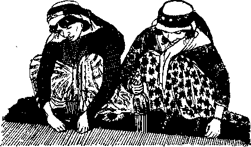

DECEMBER 8, 1959
THI MISSION Of THIS JOURNAL
Newt toureM that are able te keep you awake to the vital issues of our time* must be unfettered by eentorihip and selfish Interests. "Awake!" ha* no fetters. It recognizes facts, faces facts, is free to publish facts. It is not bound by political ambitions or obligations; it is unhampered by advertisers whose toes must not be trodden on; it is unprejudiced by traditional creeds. This journal keeps itself free that it may speak freely to you. But it does not abuse its freedom. It maintains integrity to truth.
"Awake!" uses the regular news channels, but is not dependent on them. Its own correspondents are on all continents, in scores of nations. From the four corners of the earth their uncensored, on-the-scenes reports come to you through these columns. This journal's viewpoint is not narrow, but is international. It is read In many nations, in many languages, by persons of all ages. Through its pages many fields of knowledge pass in review—government, commerce, religion, history, geography, science, social conditions, natural wonders—why, its coverage is as broad as the earth and as high as the heavens.
"Awake!" pledges itself to righteous principles, to exposing hidden foes and subtle dangers, to championing freedom for all, to comforting mourners and strengthening those disheartened by the failures of a delinquent world, reflecting sure hope for the establishment of a righteous New World.
Get acquainted with "Awakel" Keep awake by reading "Awakel"
Published Simultaneously in the United States by the watchtower bible and tract society of new york. inc. 117 Adams Street Brooklyn 1. N. Y., U. S. A.
and in England by WATCH TOWER BIBLE AND TRACT SOCIETY Watch Tower House, The Ridgeway London N.W. 7, England
N. H. Knorr, President Grant Suites. Secretary
Printing thia issue: 3,000,000
“Awe kt 1” is RibllHiid in the til lowing 21 Inningu:
i«h. French, Ornitn, Greek, Italian, JapHnrse, Norwegian, PcrtngiiFs*, Spanish, Sweriistr, Tsealog.
Monthly—Clny an ja, Ind ones Jimi., Korean, Polish, likfAEn-jRD, Z-1L11J.
Yearly BUWrlption rate*
Ofleos for sefflimonthly edtlutw
Amarl'a, U.S.. 117 Adama Brooklyn 1, N.Y $1 Australia, 11 Beresford Id., gtratbflelif, N8.W. S/-
Canada, in6 BrJdgel&nd Ave., Toronto Ifi. Oni. SI Enilakd, Watch Tnwgr Hou’e,
The Ridgeway, Landon N.W. 7 */-
Mew Zealand, A21 New North Rd., AncRUnd, S.W. I 7/-E-wnth Africa, Private Bai, P.O. Elindsfontrln. Tri. 7/-Monthly Adlt-lnm cost half the abort- rates.
4d a copy (Australia, 5d)
R am Itt antes for subscriptions should bm vent tn the office
>’rw wniffiv. fWwrwfc* mw? ,w reJ»JUani*f to London. Notice of ax pl rat ion is sent at least tun ]jRUe& before Biihnrrlpt.lon expires.
CHANGES nr ADDRESS should reach » thirty day* before year moving date. Clve ■< year old and h«w addreu (If ptutlhle, yonr old addreu label). Watch Tower, Watch lower Haise, The Blde'way, London N.W. 7, Enahnd.
Kntereil as second-class matter at. Brooklyn. N.Y. Printed in England
The Bible translation i$ad In "Awake!'4 Is the New World Translation al the Holy Scrlptirwi. When other translations are used the fallowing symbols will Myear behind the citations:
Afi - American Mtaniiarf Version AT - An Amertc-ari Translation AV - Authorised Version (IBID Z)Q. - J. N. Darby's, version
jDl/ - Catholic Ikmay reruion E£) - The Emphatic Dfaglctt JP - Jewish Publication Soc. LiG - Isaac Lspjwr'i version
Jtfo - James Moff a it? version JvO - J. B, Bfltherhanfs venlcn j?S - Revised Stanrisrd Vertton Yp - Robert Young's version
CONTENTS
Wanted—A Finer Type of Citizen
They Produce "According to Their Kinds" 5
Typhoon Vera and a Night-of Horror
Doctor, My Child Swallowed Poison!
“Your Word Is Truth”
Jehovah's Witnesses—Who Are They?
Watching the World
WHAT would you think if your son shortchanged you? Would you punish him and make him return the money, or would you think him clever for having tried to cheat you? Suppose your daughter told you she cheated in her examinations at school, would you shrug it off as nothing? If your husband came home with a fistful of money he had found, would you encourage him to report it to the police, or would you delight in spending it? These questions have to do with morality and integrity, and our answers reveal the type of citizen we are and the kind our children will be.
Too often morality is looked upon as a big joke. People think themselves shrewd for having beaten the government out of some income tax money. They boast about hoodwinking the insurance company out of a few extra dollars. They brag about duping customers and outwitting business partners. They laugh about padding the company’s expense account, and justify their actions by saying that the extra money offsets the high cost of living. They think themselves smart when they manage to get parking tickets "fixed” and beat the law. They view themselves as clever in so many ways, until one day their own sons and daughters are forced to pay the price for their blindness, for their lack of integrity and for the easy immoral values they h^ve foisted on them. Parents want their children to grow up as honest, decent, peace-loving citizens, but too often they do little about charting a moral course for them to follow. What kind of an example has been set?
Each year, the United States government "loses at least $1,500,000,000 through what we charitably call ‘honest mistakes’ in income tax returns,” said an internal revenue expert. “More than 14,000,000 come in with errors ranging from petty to flagrant.” Yet these persons do not view themselves as cheats even though they deliberately lie in filling out their returns.
Small and big industries in the United States pay more than $220,000,000 annually for insurance to guard their property against amateur and professional criminals. Employees see nothing wrong in taking home tools, clothing, perfumes, drugs, groceries and a host of other items from their place of work without paying for them. Still these very ones would knock you down if you were to call them thieves or dishonest. A supervisor of a warehouse reports: “My men take tools, clothing, odd bits of merchandise. They’d quit if I told them they were stealing. ‘From who?’ they’d ask me. All they know is that they work for some big, mysterious corporation —and it’s no money out of anybody’s pocket.”
Managers of hotels report that everything from towels to shower curtains is removed from rooms by guests. Restaurant owners tell of employees taking home butter, eggs, steaks and chops, while customers pocket salt shakers, dishes, forks, knives and spoons. Still these same people would be shocked and hurt if they were called thieves. They consider themselves honest, law-abiding citizens.
In the realm of politics the moral decay is evident. We read of shrewd political, “deals” that reek of underworld corruption. We hear of influence peddling among “respectable” men in high places. Even the Department of Justice and the patrolman on his beat have come in for scrutiny and questioning in the minds of the people. A few years ago Representative Kenneth B. Keating disclosed “that House investigators have uncovered cases where the Justice Department has ‘whitewashed’ criminal charges brought against ’influential or politically powerful figures.’ ” Some of the police and firemen brazenly accept bribes and shake down businessmen. Tax collectors accept what they call “gifts” from people. Oaths of office are often taken with mental reservations.
Speaking on morals, Arkansas’ William Fulbright declared that “much of the evil of the world is beyond the reach of the law.” He said that many businessmen, ostensibly reputable businessmen, employ “knavish lawyers to circumvent the law and enrich themselves at Government expense.” The bribed, he said, are men “false to their oaths and betrayers of their trust.” The bribers “are often men who walk the earth, lordly and secure, members of good families, respected figures.” The senator said: “One of the most disturbing aspects of this problem of moral conduct is the revelation that among so many influential people morality has become identical with legality. We are certainly in a tragic plight if the accepted standard by which we measure the integrity of a man in public life is that he keep within the letter of the law.... What seems to be new about these scandals is the moral blindness or callousness which allows those in responsible positions to accept the practices which the facts reveal. It is bad enough for us to have corruption in our midst, but it is worse if it is to be condoned.”
The prophet Hosea tells of the world’s plight in these words: “Jehovah hath a controversy with the inhabitants of the land, because there is no truth, nor goodness, nor knowledge of God in the land: There is nought but swearing and breaking faith, and killing, and stealing, and committing adultery; they break out, and blood toucheth blood. Therefore shall the land mourn, and every one that dwelleth therein shall languish." (Hos. 4:1-3, AS) This is the sad state of Christendom. Yet we hear no resounding call to moral arms. There is no vast move to “throw the scoundrels out!" She has grown flabby and easygoing about her moral values.
Said one of New York’s leading clergymen: “Unless we have a finer type of citizen we are heading for a crash. Our prime need is integrity—men . . . whose moral sense is sound.” But Christendom, having compromised the principles of God’s Word and having failed to keep integrity with Him, cannot produce such men. Yet such persons are found in the New World society, among those who look in faith toward God’s new world in which “righteousness is to dwell” and who are now making their minds over in harmony with the will of Jehovah God, the Creator of that new world. Will you be one of such?—2 Pet. 3:13; Rom. 12:2.
wl
/of Not//? /□ <;/i /hr (h//pre.‘J
one spirit, so
THE Bible teaches that man and beast “have the same eventuality. As the one dies, so the other dies; and they all have but that there is no superiority of the man over the beast.” (Eccl. 3:19) When we compare man with the animals, we find the Scriptural declaration true. In many cases man eats the same food as some animals. Life processes are about the same in him as in certain beasts. As far as the essential anatomy of man is concerned, they are almost identically the same. In fact, it is claimed that every bone, muscle and nerve found in man can also be found in the chimpanzee. They even have the same chromosome number—twenty-four pairs. Does this similarity between man and the gibbon, the orangutan, the chimpanzee and the gorilla prove that they are all of the same ancestry?
Authorities say that there are now “more than one million species” of plants and animals in the world. What proof is there that these are not all of the same ancestry?
The Bible does not becloud the issue with nebulous evasions of fact, but drives right to the heart of our problem in its opening verse, saying: “In the beginning God created.” What did God create? The Genesis account reads: "God went on to say: ‘Let the earth cause grass to shoot forth, vegetation bearing seed, fruit trees yielding
count tells us sea monsters glides, which
fruit according to their kinds, the seed of which is in it, upon the earth? And it came to be so.” The ac-that God created “the great and every living soul that the waters swarmed forth according to their kinds, and every winged flying creature according to its kind,” and that God blessed them, saying: "Be fruitful and become many?’ Regarding land animals, the account states that God created "domestic animal and creeping animal and wild beast of the earth according to its kind?’ The lesson here is that in the beginning God created not just the simple forms of plants and animals, but the most complex forms, so that at the close of the sixth creative day the earth was stocked with all the basic kinds of plant and animal life, each capable of reproducing its own kind. After having created the animals, God created man in his own image and likeness, and gave him dominion over the lower animals of the earth.—Gen. 1:1, 11,12,21,22, 24-28.
The Genesis account does not say that man today is a perfect copy of the first man Adam, The record is plain that modem man is a degenerated form of the first man. Neither does the Genesis account presume to go into every aspect of life. It merely describes the beginnings or the origins of life and reveals the causal force that energized all natural processes. The account simply Indicates a few basic principles that underlie the whole intricate structure of creation. In the Genesis record Jehovah God merely supplied the knowledge that he knew man’s mental make-up was incapable of mustering. The other factors about life, however, the Creator left up to man to discover.
Boat Variations Came to Be
As to living earthly creation, the Bible shows that plants and animals have the power to reproduce after their kinds and it allows for variation within the basic kinds. Just as we are capable of forming a great variety of words from a limited alphabet by a simple combining of letters, and just as a musician is able to use his instrument that has a limited number of keys to create many different tunes by combining a few tones, so the Creator Jehovah God, by implanting in his creation factors that could be combined in various ways, has arranged so they would produce different varieties of species, yet "according to their kinds.” The potential for variety depends on the number of factors the Creator implanted in each original creation. Some creatures have many factors; therefore their power of variation is great. It appears that man has the greatest potential for variation of all the creatures on earth. Within the one man Adam resided the genetic make-up that has enabled man to produce in due time the great variety of humanity now evident on the face of the earth. Like variations have also occurred and are continuing to occur among all animals and plants.
The variations of life from generation to generation, however, are not by a hit-and-miss, disorderly process as some might think. Much to the contrary, it is a beautiful and orderly variation, one that follows definite, fixed governing principles. William Bateson, English surgeon and biologist, after carrying on many breeding experiments, lauds the "orderly system of descent” and praises “the beautiful order in the way young are produced.”
Ten times in a few short verses the Genesis Recount states the biological rule that' plants and animals were created to reproduce only “according to their kinds.” This means the Creator formed these living organisms to reproduce according to a fixed orderly pattern. This is in keeping with the inspired statement: “For God is a God, not of disorder, but of peace.” (1 Cor. 14:33) Everywhere we look about us we see the orderly pattern of creation, that is, isolated groups of organisms reproducing after their kinds. We see sunflowers bringing forth sunflowers, beans producing beans, elephants breeding elephants, crows hatching crows, and so forth. “According to its kind,” wrote Byron C. Nelson, is the statement of a biological principle that “no human observation has ever known to fail.” Yes, even the very oldest records on stone and in clay tell Us that a horse has ever been a horse, that dogs have ever been dogs, that pigeons have always been pigeons, that oak trees have ever been oak trees. Try how men may, they have never been able to alter what Jehovah has decreed, that creation bring forth “according to its kind.”
What Is Meant by “Kind”?
Is every variety of plant and every breed of animal a separate and distinct creation? No, the Genesis account does not say that God made many breeds of horses, cows, pigs, chickens, maple trees, and men. The Bible simply says that God made “the wild beast of the earth according to its kind and the domestic animal according to its kind and every creeping animal of the ground according to its kind.” Frank L. Marsh, professor of biology, defines a common “kind” as a division within which cross-fertility is possible. Where failure to accomplish fertilization occurs, a demarcation of a kind is reached. —Gen. 1:25.
While the Bible allows for new varieties within the basic kinds, it does not uphold theories that teach new creations or kinds have arisen since the creative days of Genesis. The many new and strange varieties of trees and plants, of birds and animals witnessed by man are not new family kinds, but old kinds with new variations.
Studies and experiments show that there are hundreds of thousands of different types of plants that belong to a single family, that there are about fifty different types of “cats” throughout the world that belong to the one cat family, that there are forty distinct varieties of cattle that belong to a single family, twenty known varieties of hogs that are related to one family, five hundred varieties of sweet peas that belong to the sweet pea family, thirty varieties of sparrows that belong to the sparrow family, a hundred and fifty types of fruit flies that are of one family, and some one hundred and sixty breeds of men that belong to the one human family. While the variations are great and many, yet the number of original families is small. Even though there are some 600,000 species of insects, some 8,500 varieties of birds, about 750,000 described species of animals and more than 600,000 described species of plants, yet if we confine our attention to basic Genesis kinds—not variations—we find that these huge estimates dwindle into scores, which proves that none of these variations are new creations. They are merely a new combination of old forms.
Some forms of life have limits that are distinct and recognizable, while other forms are not as easily identified by visible attributes. For example, horses, dogs, cats, ducks and corn stand out as clearcut kinds, and variations within the kinds are easily recognizable by similarities. However, there are forms of life that one might expect to belong to the same family that are found by breeding experiments actually not to be so. On the other hand, some forms of life that one would not readily expect to belong to the same family kinds are found by breeding experiments actually to be so. Take, for an example, man. His structure, muscular, nervous and digestive systems are almost identical with the chimpanzee, the gorilla, the gibbon and the orangutan. But similarity between processes of life does not prove ancestry or family Kind. External or internal similarities are not the final deciding factor. The determining factor is stated to us by a prominent student of heredity, Punnett, who said: “It is not visible attributes that constitute the essential difference between one species and another. The essential difference, whatever it may be, is that underlying the phenomenon of sterility.” “The true criterion of what constitutes a species is sterility.”—Mendelism, 6th ed., page 183.
Breeding experiments show there to be an impassable gulf between man and the lower animals. The divine decree “according to their kinds” proves them different creations, different kinds. The apes can freely breed with their kind and produce fertile seed but are unable to cross with any other kind ahd produce fertile offspring. No man has ever hybridized with any member of the group of higher apes. The test of fertility establishes beyond question that man and apes are not of the same ancestry, that they are two separate and distinct family kinds.
The Testimony of Fossils
There is no evidence that Jehovah’s law of each producing after its kind has ever changed. From creation to our day the Genesis kinds have existed as physiologically isolated units. The fossil record proves this true beyond all doubt. The fossils that are dug up today show that plants and animals of ancient times are identical with those of today. Oak trees are still oak trees, elephants are still elephants, eagles are still eagles, and so forth. A leaf of a hickory from the so-called Pliocene epoch is identical with a living hickory leaf of today. A leaf of a fossil Japanese oak from the so-called Eocene age is in every way like a present-day living Japanese oak leaf. Certain men speculate that some three quarters of a billion years separate the living from the fossil types of a variety of starfish found in the so-called Ordovician rocks. Yet there is no essential difference between those and the varieties of starfish that exist in the oceans today. Professor Marsh reconciles the variations within kinds with the stability of the kinds themselves, adding: “If processes of variation today are not erasing the differences between kinds, neither could they do it in one thousand million years.” And the fossil record proves him true. The testimony of fossils is that the Bible principle “according to their kinds” has been enforced since creation time.
Nooft's Ark Capacity
Approximately 1,655 years after Adam’s creation the Flood came. During all these years and before this time animals and fowls multiplied in great numbers and varieties. How was it possible for Noah to get all of these into the ark? Note, the divine record does not say that Noah had animals of every description enter the ark. No, it says: “Of the flying creatures according to their kinds and of the domestic animals according to their kinds, of all creeping animals of the ground according to their kinds, two of each will go in there to you to preserve them alive.” It was not varieties, but family kinds that Jehovah was interested in preserving. Since He knew what pairs had the potential for greatest variability, these he caused to come to Noah for preservation. So, instead of many varieties being saved, it was necessary to preserve only the basic kinds. After the Flood each kind would again multiply in variety over the face of the earth.—Gen. 6:20; 7:14,15.
How many family kinds are there? To trace back to each original kind that entered the ark would, of course, be impossible. The fact alone that some have since become extinct would prohibit this. Clarke's Commentary makes certain interesting observations. Of the six divisions of animal life, it assigns three that are concerned in the ark calculations. The Commentary assigns only forty-three genera or kinds to the mammalia division (excepting the whale kind, certainly of no concern here), seventy-four to the aves division, birds (not including web-footed fowls), and ten to the amphibia division (reptiles and serpents). Professor George Bush published in his Critical and Practical Notes on Genesis that “all the various distinct species of four-footed animals may be reduced to two hundred or two hundred and fifty,” that “it cannot for a moment be doubted that the ark would contain the specified proportion of these, of birds, insects, and eight human beings, with the requisite supplies of food for a year.”
After the Flood waters subsided, the survivors migrated, and as they migrated they multiplied, leaving varieties of their kind all along the way over the face of the earth. Variations occurred, but kinds remained fixed, unchanged, immutable, according to Jehovah’s word, which never returns to him void.—Isa. 55:8-11.
THS
By "Awake!'
THE Oriental floor covering. It Hundreds of thousands of been paid for a rare one. It is made entirely by hand and cannot be matched in quality or design by imitation machine-made products. Without doubt, it is the aristocrat of rugs.
Oriental carpets have been collected with passion since the days of Henry Vin, when the Duke of Buckingham held up signing a treaty until he got the Persian rugs he coveted for Hampton Court. Great painters such as Rubens and Van Dyke frequently included them in their paintings. By so doing they helped rug experts of today in dating old rugs. The high regard painters showed for them has been largely responsible for the high artistic repute they have today.
Fine Persian rugs possess rare distinctive beauty of design that is characteristic of the district from which they come. No two are alike although belonging to a special family of patterns. It can be said that the more one studies them the more fascinating they become. A really great carpet does not reveal its quality at once no matter how impressive the first view may be. It is as complex as a symphony and as rich in color as any painting. It contains the richest decorative traditions known.
The most magnificent carpet is said to have been the one that was made for the Persian palace at Ctesiphon. It is the so-called Spring or Winter carpet of Khusraw. Its pattern was that of a garden showing paths, watercourses, flower beds, shrubs and trees. It was an immense rug of about eighty-four square feet. Reading it The Encyclopaedia Bri-“Thc body of the rug was avel was represented by s; fruit and birds were ;ls and every kind of jew-ter border representing a was solid with emeralds.... active use of the national ich would otherwise have been unproductively locked in dark vaults.” The original value of the carpet has been estimated to have exceeded $200,000,000, It was cut into small fragments by the Arabs when they conquered the Persians A.D. 635.
Materials Used
A long woolly hair that comes from certain camels is often used for rug weaving. It is silky and soft and has phenomenal durability. It has the drawback, however, of giving off a disagreeable odor on hot summer days.
Wool is the most popular rug material. The best quality comes from sheep that have been raised in cool climates, at high altitudes and on good pasturage. The best comes from the provinces of Khorasan and Kurdistan. The softest and most lustrous
wool is obtained by combing the sheep in the winter. This wool is known as “kurk.” It is used in the choicest prayer rugs. These are elaborate rugs with certain texts from the Koran tied into both inner and outer borders. Square panels contain Koranic verses, and the prayer arch and center are filled with quotations from the Koran.
After the wool is sorted it is washed in cold running water until all foreign matter has been removed. Soft water is better than hard water for this. It is then laid out in the sun to bleach. The next step is to place it in a stone vessel and cover it with a mixture of flour and starch. It is then pounded with wooden mallets. Another washing in running water follows this. During this process the wool shrinks to about 40 to 50 percent of its original weight.
The majority of the finer Persian rugs have cotton woof and warp. This makes the rugs lighter and gives a more compact foundation upon which to tie the pile.
The secrets of the dye pot are one of the important factors responsible for the beauty and durability of the rug. How to extract coloring matter from roots, leaves, flowers, barks and other vegetable matter was a secret that dye makers kept within their respective families. Some dye processes were lost when the families that knew them died off.
The wool is dyed by dipping it in one or more pots according to the shade wanted. Without wringing it the wool is hung over the pot to drip. It is then washed in cold water and dried in the sun. Now it is ready for the weavers.
How the Ruga Are Made
Next to the quality of the material from which it is made and the dye that is used, the splendid durability of the Oriental rug is due to the manner in which the pile is tied to the warp thread. It is fastened so securely that it is impossible to remove by pulling either end of the knot. In the finer fabrics the knots are so close that it requires careful examination to find them, except in very old rugs where the pile is worn down to the point where the knot can be seen.
The eastern loom is the same today as it was a thousand years ago. It consists merely of four poles joined together by ropes that are adjusted according to the size of the rug to be made. The warp threads are strung and kept at the proper tension by weights that are attached to one of the cross poles.
From one to six and sometimes even more weavers work on one rug at the same time. The size determines the number of workers. They sit cross-legged either on the floor or on a raised frame, with the work on a level with their knees. They fasten a model of the rug before them. It is known as the “talim." The colors are indicated on it as well as the number of knots to be tied in each color. In many cases the head weaver sings the symbols for the benefit of the others. Among the nomads the design is frequently kept in mind or drawn on paper or in the sand.
The weaver begins at the bottom and works toward the right. The wool yarn that forms the pile is looped around the warp threads by the aid of blunt pointed needles and is then tied in such a way that by each knotting two of the warp threads are bound. When the Turkish or Ghiordes knot is used these two threads are bound side by side. These threads are bound in front of each other when the Persian or Senna knot is employed. The process is repeated along the line with the proper colors required by the patterns. After each row of knots one or more weft threads are passed through between the warp threads and then beaten down with a sort of comb.
The pile is then trimmed off to the desired length. Close trimming brings out more minutely the color variations.
The number of knots to the square inch is determined by the closeness of the warp threads and the number of weft threads thrown across after each row and also by the thickness of these threads. The tighter and closer the knots are tied the more perpendicular the pile will be, and the fabric will be more durable.
Care of Rugs
Even the best rug will not have good durability if it is not given proper care. Oriental rugs cannot be handled and beaten like domestic rugs without doing serious injury to them. Good handling will increase the beauty and longevity of the rug. Never shake it or hang it on a line. Lay it face down on the grass or on a clean floor. Then beat it gently with something pliable, such as a short length of rubber hose. Turn it over and sweep across the nap and then with the nap. Never sweep against the nap, as that tends to loosen the knots and to cause the dirt to settle deeper in the rug. Now dampen a clean white cloth in water to which a little alcohol has been added. Wipe the entire rug in the direction of the nap. Clean, dampened sawdust or snow does just as well. Cleaning with compressed air from time to time helps to get the deep dirt out. Under most conditions Oriental rugs should be cleaned every week or two.
It Is advisable to have the rug washed every year or two, as this not only removes dirt but also any moth eggs that may be in the pile. Make certain, however, that the ones who do the cleaning know their work well. Irreparable damage can be done by those who do not.
As with any rug, soft rubber cushions under the Persian rug will make it last longer. It lessens wear. Excessive wear on any one spot on the rug can be avoided by occasionally changing the rug’s position. If it should become crooked it can be straightened by tacking it to the floor in its proper position. Then wet it and leave it until thoroughly dry and shrunken into proper shape.
Beware of keeping a rug where there is dampness. It is one of the greatest enemies of Oriental carpets. Never lay an Oriental rug on a concrete floor that is below ground level unless the concrete has been waterproofed. Otherwise, moisture may seep upward and pick up alkaline salts that will help the dampness to deteriorate the rug as well as the rubber padding under it. A concrete floor upon which moisture condenses is also bad for rugs. Dampness rots the threads and destroys the fabric. .
If it should be necessary for a person who owns Oriental rugs to close his home for a few weeks or months he should be sure to store his rugs. After having them cleaned they should be placed in canvas or paper bags that can be tightly sealed. They should be rolled, not folded. Large ones may be wrapped in white paper and then tar paper. The room in which they are stored should be airy and dry.
There is a great amount of misconception as to how long it takes to weave one of these aristocratic vugs. None takes a lifetime, as some people may think. About three years is required to make the finest carpets. Although the huge Ardabil carpet has 33 million knots, it could have been made within four years. Even so, the labor in these fine carpets is very great.
Only in lands where time is not considered the equivalent of money can such beautiful rugs be produced. Europe and America, with all their machines and mechanical skill, cannot begin to produce such exquisite carpets. Without doubt, the Oriental rug is the aristocrat of rugs.
HOW IS A
CHRISTIAN TO VIEW
BOXING?
W out Floyd Patterson on June 26-at" New York’s Yankee Stadium, great was the rejoicing in Sweden. Gifts poured in, and the king of Sweden sent his heartiest
congratulations. The night of the fight, beginning 3:30 a.m. Swedish time, saw a large percentage of the population awake to hear the blow-by-blow account broadcast When the knockout was made known, people streamed onto the streets, yelling and singing and generating a storm of rejoicing.
The victor’s return to Sweden occasioned new expressions of ecstasy. In Johansson’s home city of Gothenburg the sports organization organized a formal triumphal procession from the airport to the city's largest stadium. Here delirious manifestations of exultance almost created a panic. Big names in the sport and entertainment world tried to outdo one another in eulogies. When this triumphal procession reached Stockholm, the manager of the Stockholm (State) Opera, Set Svanholm, sang an old Swedish anthem before 15,000 persons in praise of the new heavyweight champion.
Not all Swedes, however, were glowing with exultant eulogies. Stockholm’s biggest evening newspaper, Expressen, brought some grim facts to its readers’ attention. It pointed out that every year some boxers die because of the “sport” and that many boxers suffer physical injuries. “According to the criminal law boxing is assault with malic io intent,” -said Expressen. “This assault d battery called boxing is carried on under spotlights. It is high time to focus another light on what takes place in the square formed by the ropes, namely, a reflection from the criminal jurisdiction which would deprive this legalized assault and battery of its legality.”
A religious newspaper, Dagen, also focused its spotlight on boxing: “This type of amusement is a sign of the times. It is after having gone through the whole scale of decent amusements and not being satisfied that one turns to a so refined enter-, tainment as that of a primitive bloody fight. A sure sign of a decaying culture.” The newspaper considered boxing a modern form of slavery patterned after ancient gladiatorial games.
Historical Spotlight
Focusing the spotlight on ancient boxing, we learn that boxing was introduced at the Olympic Games in 688 B.C. The Greeks at first wore "gloves” that consisted of straps of soft leather. Later hardened leather was used, sometimes enforced with metal. About 400 B.C. boxing “gloves” were virtually metal fists. This instrument, called a cestus, inflicted the severest injuries and often death. The Romans took such a liking to boxing that they went to great extremes to provide more brutal kinds of cestus. Boxing thus was a life-and-death affair. A boxer gained victory by beating his opponent to death. With the pulverizing cestus this did hot take long, the first few blows crushing the face of an opponent.
Victors in ancient cestus duels were greatly honored. Tributes were paid to them. Many were the long orations in eulogy of them. There were rich rewards. The champion ancient boxer was viewed as king of athletes, much as the heavyweight champion of today.
Finally the deadly cestus was banned and boxers had to use their bare fists. After the decline of the Roman Empire, boxing virtually disappeared from history. Not until the early part of the eighteenth century did it make a popular comeback. This was in England. Gloves were first used in the time of Jack Broughton, “the father of British pugilism.” But they were used only for practice, all prize fights being decided by bare fists. Not until late in the nineteenth century were boxing contests fought with gloves.
Since gloves are now used, how are we to view boxing today? Boxing in which the objective is to injure an opponent, especially by means of a knockout, is what we shall consider, turning the spotlight first on the danger to participants.
Bloodshed and Punch-Drunkenness
Discussing this matter, Harold Barnes, a veteran boxing official, wrote in The Saturday Evening Post of October 25, 1958: “I estimate that I’ve officiated at 6000 fights, including 200 main events and 100 championship bouts. There is one other statistic I’m not at all proud of. I’ve seen almost as much bloodshed in the ring as if I had been working all my life in a Chicago slaughterhouse. ... If I had the power to do it, I would outlaw boxing. To put it bluntly, I consider boxing legalized murder. Since 1945 some 156 fighters have died from injuries inflicted in the ring.... There are more deaths per number of participants in boxing than in any other sport.”
Speaking of a danger that stalks a far greater number of fighters, this veteran official writes: “Way back in the 1920’s a doctor in Newark, New Jersey, made an exhaustive study of fighters. He found that 50 percent of those he examined were punch drunk to some degree.” Concerning a more recent study, Barnes writes: “Dr. Ernest Jokl, professor of physical medicine and rehabilitation at the University of Kentucky Medical School, concluded after a study of 185 fighters, ‘while very fortunate boxers may escape serious brain damage, the great mass of fighters are not so lucky.’ ”
A naval chief petty officer pointed out recently in the Medical Technician that amateur boxers should get plenty of calisthenics but little actual boxing before entering the ring. The explanation: “The majority of solid blows to the head are apt to cause minute hemorrhages on the very surface of the brain.”
Once the brain is damaged in boxing there is little that medical science can do. Reporting on an article in the British Medical Journal by Dr. Macdonald Critchley, neurologist at Kings College Hospital, Science News Letter for March 2, 1957, said:
“Punch-drunkenness is much commoner among professionals than amateurs and is very rare among colored boxers, he reported. It has been found in fighters of all weights but most characteristically in small men who had not been particular about the size of their opponents and had taken on contestants heavier than themselves. Dr. Critchley defines punch-drunk fighters as those amateurs or professionals who have undergone gradual and mental deterioration as a direct accumulated result of their careers. ... It is usually a matter of years before punch-drunkenness shows up but once it does it is irreversible and usually advances steadily, Dr. Critchley reported. The victims may admit to few if any disabilities but complain of headaches, dizziness, deafness, poor vision, intolerance toward alcohol, unsteady gait and shakiness. In some cases speech becomes slurred and memory is affected.”
An example of what Dr. Critchley describes was seen in the motion picture “The Harder They Fall,” a film in which an actual ring-wrecked fighter appears. Discussing this, Life magazine reported: “Greb, who now lives in Los Angeles subsisting on handouts, was unaware he was being filmed during his interview. He proceeded to give a spontaneous account of his homeless, lonely life. At first he spoke clearly, then ran out of brain power and had to stop talking until his mental gears began painfully to mesh again.”
Mental Attitude and Association
Turning the spotlight now from the physical to the moral aspect, the question arises: What is the mental attitude of the boxer who must seek to gain knockouts? Can he retain the Christian qualities of love and kindness or are they sacrificed on the altar of expediency? Let us see.
Following a 1947 fight with Ray Robinson, welterweight Jimmy Doyle died. At the inquest Robinson was asked why, if he knew Doyle was hurt, he continued to rain punches on him. Robinson said: “Hurtin’ people is my business.” And so it is the boxer’s business. But is hurting people the business for Christians?
Giving us further insight into a boxer’s mental qualities, at least while he is in the ring, is an article in The Saturday Evening Post of January 12, 1952, by Carmine Vingo, once known as Bingo Vingo,' a fighter who once showed great prospect for glory as heavyweight champion, Virigo tells how his health was permanently shattered in a fight in 1949 with Rocky Marciano. Then he went on to tell of the time he fought one of his best friends. It was the first round. “He was helpless, and the crowd knew it, and I knew it too,” says Vingo. “I could hear, ‘Kill him, Bingo! Kill him!’ and suddenly I went crazy. The guy in front of me wasn’t my buddy any more. He was just something I wanted to bring down. I think I must have hit him twenty-five times. ... He fell hard, like a board falls. Straight back, legs stiff, arms by his sides. . . . Remembering all this now didn’t give me any pleasure. It made me a little sick, in fact. I was glad I wasn’t in a business any more where you were a person one minute and a killer the next. The killer was out of me. I wondered how I’d ever had it. But to be a good fighter you’ve got to have a little of the killer in you. You can’t be afraid of what’s going to happen to you or the other guy.”
Is it safe and right for Christians to take a chance on losing self-control and allow, even for a moment, a “killer” attitude to rule as king over their mental faculty? "The fruitage of the spirit,” writes the Christian apostle Paul, "is love, joy, peace, longsuffering, kindness, goodness, faith, mildness, self-control.”—Gal. 5:22, 23.
Another facet to the moral question, one that has been spotlighted by the newspapers, recently, is that of underworld direction. Heavyweight champion Johansson himself wrote an article, published in Life magazine of August 24,1959, telling of his difficulty in getting any money out of the fight and exposing underworld control. “We have heard about a lot of very crooked things in American boxing,” wrote Johansson, “but we never realized that the crookedness could be so bad,” When former heavyweight champion Jack Dempsey had a talk with Johansson, one of Dempsey’s statements was, as published in the New York Times of August 23, 1959: “During the last few years the American fight game has been largely directed by underworld figures.”
Is it right for Christians to be directed by or even associated with underworld figures? God’s Word declares: “Bad associations spoil useful habits.”—1 Cor. 15:33.
Fascination at Brutality
What of the mental attitude of the boxing fans, those that thrill to the brutal battering that goes on in the ring? Are they mainly interested in skill, or does brutality provide much of the fascination? Says The Encyclopaedia Britannica: “That fighting or boxing has an appeal to the elemental and primitive in man, boxing's most loyal supporters cannot deny.” Writer Harvey Breit, in the New York Times Magazine, says: “Take the brutality away from boxing and you have no prizefight, . . . Brutality is a part of boxing, the pattern in the carpet. The most memorable fights were the most brutal.”
What happens when brutality is curtailed? Science Digest pointed out in its issue of October, 1955; "Protective headgear has been advocated, even tried in pro fights. The fans stayed away in droves."
Let no one be deluded by the matter of skill. There was skill demonstrated by the boxer of ancient times who, with his metal-loaded cestus, beat an opponent to death. But is skill in inflicting injury the kind of skill to become a Christian’s object of enthusiasm?
Is it right for Christians to make brutality a source of fascination by gazing avidly at it either at the ringside or on the video screen? Though a Christian’s choice of entertainment is up to the individual, if a person finds pleasure in violence, he is not cultivating the right qualities in harmony with Philippians 4:8. Here Paul tells Christians to keep their minds on “whatever things are righteous, whatever things are chaste, whatever things are lovable.”
What kind of an example do parents set for their children when they thrill to brutality in the ring? When children get in fights, the parents think it is terrible, disgraceful. Yet where did the children get the idea?
Is it right for Christians to relish things that are so opposed by God that they will not exist in the new world? The holy spirit is opposed to smiting. To qualify as an overseer in the congregation one cannot be “a smiter.”—1 Tim. 3:3.
Putting boxing under the spotlight has revealed hero worship, large-scale underworld direction, danger of injury to body or mind, danger of loss of self-control, danger of killing another or of being killed, although legally by man’s laws. It has revealed brutality and fascination In brutality. Far from the fruitage of the spirit, all this stands in opposition to the spirit of God.
U/atetjato&fihy
Waterproofing is nothing new; man may have learned it from the birds. Water birds have glands that produce oil for waterproofing their feathers. A duck can sleep on a lake for a whole night. "Wild ducks swim and dive," says H. Mortimer Batten in Inland Birds, “without so much as becoming moist below the surface feathers."
a.
AND A NIGHT OF HORROR
1 —a year of disasters. That is
X Jz O V how the Orient views it. Torrential rains bringing record-breaking floods to Hong Kong. A devastating earthquake and the worst rains in sixty-two years in Taiwan, followed by floods that killed close to a thousand persons, rendering a quarter of a million homeless. This was in August, and now the typhoon season started. Typhoon Iris slammed into Fukien Province on the Chinese mainland, killing more than 700 people. Hard on her heels came Typhoon Joan, but this time it was Taiwan that again received the blow. Thirty thousand persons in the capital, Taipei, fled flimsy homes for more substantial shelter, and six were killed.
What is a typhoon? The word comes from the Cantonese, meaning “big wind.” The Japanese variation, tai/w, means the same. In the Americas it is given a different name, the hurricane, and this is derived from a Spanish word, meaning “evil sea spirit.” However, the meteorologist calls it the cyclone, and this word, being derived from the Greek for a circle, indicates a rotating wind system accompanied by low pressure. Though the typhoon may advance at only ten or twenty miles an hour, its whirling winds, stretching over a diameter of even a hundred miles, may blow as hard as 160 miles an hour, or more. The typhoon is a killer.
Greatest Killer of All
Now let us introduce the greatest killer of them all, Typhoon Vera. Vera came toward the end of the typhoon season. From the time of her birth in the Pacific off
• .............
Guam, weathermen fallowed her progress north, warning that she was “a monster.” Where would she strike? Skirting to the east of Taiwan and Okinawa, she made straight for Japan. Storm signals were out two days ahead, as it appeared her target was Tokyo. If she had hit the Japanese capital, five million might have been rendered homeless. However, it was bad enough that she veered to the west, coming into land at Japan’s third city, Nagoya, and in a bay district populated by millions of people.
First came the torrential rains, drenching and soaking; then the terrific winds, smashing houses like matchboxes, uprooting forests and turning whole streets into piles of rubble. Finally, and most destructive of all, came the tidal wave, that monstrous wave that Vera piled up in the Ise Bay, and which some eyewitnesses claim was a hundred feet high. Nothing could stand before it. Great concrete breakwaters collapsed as though they were paper doors. The waters surged on into half a million homes, some thousands being completely swept away. Japan has now given Vera the official name, the “Ise Bay Typhoon.”
The mighty wave swept along everything in its path. The 7,412-ton British steamer Changsha, carrying several hundred tourists, was tossed high and dry on the beach near Yokkaichi. In Yokkaichi many lost their lives, and two special pioneer ministers, Jehovah’s witnesses, had a grueling experience. They stayed in their home while the rain was bringing floods down from the hills. However, the flood suddenly started to rise quickly, and this time it was salt water. With presence of mind, the old gentleman at whose home they lived roped himself and the two women together, and they set out through the flood in the nick of time, making it to the safety of a nearby schoolhouse. WJien at last they were able to return to their home, they found the floodwaters had risen above head level before they finally receded, leaving a sea of mud.
Flood Victims in Nagoya
Another family of Jehovah’s witnesses in the south part of Nagoya was not so fortunate. The husband had been a vacation pioneer minister the previous month. His wife gives her own eyewitness account of the horror that was the night of September 26:
“We are staying now temporarily at my mother’s house. Still vividly in my mind is the memory of that swirling flood of dirty water, the howling wind, the chilling downpour of rain, the heart-rending screams of the people, and our desperate desire to be saved from it all. . , .
“On the afternoon of September 26, I arrived home about 4:30. We had an early supper, and after we had cleared the dining table, we busied ourselves in putting aside food and drinking water, and patched up some leaks in the ceiling. We glanced at the evening paper, and learned that there might be danger of a high tide, as the typhoon would pass through Nagoya Bay at high-water time,.. .The wind now started blowing with an awful gushing sound, the whole house shook, and I felt that even the foundations were shaking. The situation was getting dangerous, andwe became concerned.
“The wooden window shutters were almost blown off, and my husband nailed them shut again, while I held them for him. Suddenly a dog’s barking was heard, and he went to the kitchen to investigate. He cried one word—‘Flood!’ The water was already up to the floor. Then he cried out, ‘Wake up, Katsuhito!’ I went to our older boy. He was lying awake, fearful. ‘Hurry to your father,’ I said. Then I woke our younger boy, and lifted him to the shelf of a cupboard. I was at a loss what to do, but the water kept rising fast, until it was up to my waist. The tatami (matting floor) began to float on the water, and my husband cried out, ‘We must get out!’
“I took our younger boy out of the cupboard, and held him in my arms. I tried to go to the shuttered window at the rear of the house, but the clothing cabinet and the dresser cabinet began to slide from their places, and fell down. Wherever we tried, we found the window shutters had been nailed down too tight to open. Where and how could we open the window shutters? Alas! No hope for us! My husband looked at me with heart-breaking sorrowful eyes. I can vividly remember that look.
"What happened next I do not clearly remember. Somehow, with my young boy under one arm, I had broken through the door, and we were outside, where the wind and the rain were raging. I seemed to be floating in the water. I caught the edge of the roof with my hand, and tried to find the best place where I could get a tight hold. Then I pushed the child up onto the roof. Many a time I called out, ‘Daddy, hurry up!’ and lifted myself up onto the roof. Stricken with fear, the child was trying to climb up to the top of the slippery roof, which was covered with mud. I held on to him, saying, ‘Don’t you go alone!’ and as my husband pushed our other son up onto the roof, I helped pull him up. Holding the two children tight to my sides, I crawled to the top of the roof.
“Soon my husband came up, and the four of us held tightly to one another, out of the water. In order to prevent the wind from blowing us away, we held the children with one arm, while with our free hands we held tight to the roof. We covered the children as best we could with our own bodies, so that they would not receive the direct force of the wind and the rain, and there we squatted on the roof. It must have been about two minutes from the time we were first aware of the flood until we had clambered onto the roof, and now, in a matter of seconds, the roof was two thirds covered with water.
“The wind kept blowing mercilessly from the east. I was scantily clothed, and felt the bitterness of the wind all the more. The blouse that I was wearing split up the back, so that I was almost as though I had nothing on. We tried to shelter ourselves with the raincoat of one of the children. Then we were horrified to see huge pieces of lumber floating rapidly by. Fortunately, the water did not rise above the roof. If it had kept increasing, the four of us would have been swept away. We might have been hit by the floating lumber, or swallowed up by the dirty water. At last we were able to thank Jehovah that the immediate danger appeared past. We were truly grateful, and cuddled up close together.
“The cold wind was blowing at more than ninety miles an hour, and the rain hit direct upon us, so that my hands and feet became numb, and I felt they were frozen. Since I could not foresee what would happen next, I kept moving my hands and feet, and shaking the children so that they would not fall off to sleep. The direction of the wind changed, and soon the sky began to clear, However, the wind still blew fiercely.
“The raincoat that had been our main protection now tore to shreds in the wind, and the four of us shivered with the cold, as it chilled right through our bodies. The water gradually subsided below the roof level, and my husband decided to try to make it to the attic. After stumbling many times on the slippery tiles, he managed to remove some of the tiles, and broke a hole through the roof timber, finally entering the attic. Though the attic was filled with mud, and not very safe, we risked going down there, and it gave shelter from the wind. My boy now fell asleep in my arms. The ceiling was about ready to collapse, so I sat on a rafter, and held onto the timber above my head for support. We kept this position till morning, though the wall of the house collapsed after a time, allowing the wind to blow into the attic. We waited apprehensively. It seemed to remain dark for a long, long time.
“Then the sky began to brighten, and morning came. We began to hear people on the roofs speaking. As is always the case, a very beautiful day followed the storm. The sunlight began to shine through into the attic. The children were feeling hungry and thirsty, and my small boy asked for something to eat. I held him close to me, and told him the bread and rice had been spoiled by the flood, and were too sticky to eat, so he stopped begging. The sunshine began to come inside, and my husband went up onto the roof. He told me it was warm up there, so I pushed the two children up, and followed after them.
“Very soon, the sun was shining quite strongly, and the children could not stand it any longer. They were crying for something to drink, Nobody came to our rescue, and it became unbearable up on the roof. Several houses that had been badly damaged collapsed into the water, and I felt it was dangerous there on the roof. However, there was nothing we could do about it.
“At last, some of the neighbors made a raft from the floating lumber, and began to ferry out the nearby families. Finally, it was our turn to ride on the raft, and we were taken to a high embankment. There we waited in line for three hours for another raft, which took us to the Daido School. In the evening we received one slice of bread for the two children, and we parents were able to chew on some cracker biscuits. For a long time there was no water available, and the water that was later supplied to us had a strong smell of gasoline in it. I did not want the children to drink it, but as they had cried all night long for water, I let them drink it. Immediately they vomited up what they had eaten. All next day they were painfully weak, and did nothing but sleep.
“Two days after the typhoon, my husband risked a trip back to our house, and managed to bring back some clothes. I took them down to the first floor of the school, and washed them in the muddy water, which was up to my knees, and brought them up to the fifth floor, where I put them out to dry on the concrete roof. All the food we received was crackers and biscuits, and I could not bring myself to eat them. Nobody had anything to wear on their feet. They were all barefooted, and so were we. Even in the toilets we were barefooted, and as the sewage system had broken down, the place was very dirty. That night we heard that one person was down with dysentery, and next morning, that there were further cases in the neighborhood. Hence we moved out of that dangerous place. When I think of our happy home sunken in the muddy sea, I feel mournful and depressed, even though I know that other people, too, had thia misery.’’
Physical and Spiritual Assistance
However, relief supplies were soon pouring in from all over Japan, The Tokyo Congregation of Jehovah’s witnesses responded quickly and generously in sending relief goods for victims, including the family involved in the above experience. The husband wrote back in appreciation, and it was evident that the family had been built up spiritually, as well as materially, due to the kindness of others of the New World society. Others, too, had hair-raising experiences that night. Having themselves weathered the storm, those in the Nagoya Missionary Home of Jehovah’s witnesses report:
“We got up at six o’clock Sunday morning, and the neighborhood was a pitiful sight. People were surveying their houses in the early morning light. Almost all the windows were gone, and some roofs were completely blown off. Six doors from us, a very large new building that was nearly completed had collapsed into the roadway, and its huge roof was strewn across the road, right up to the temple on the other side.
“In the afternoon we tried to go to the Kingdom Hall, but when we reached Jin-gumae, we found that the road where our hall stands was a river, and people were paddling boats, bringing out their rescued possessions. No streetcars were running. What buses were running were so full they could not even shut the doors. We had to walk all the way back to the missionary home.
“The next day we tried to go to our territory and visit our people of good will and Bible studies. We had to use bicycles, and were only able to see two of them. One house where we have our group Bible study is in a terrible mess, the water from the river at Uchidabashi having overflowed its banks and flooded the house, reaching about five feet up the walls. We went in and had a look at the damage. It was terrible. The piano was ruined. The husband’s clothes were in the wardrobe all soaking wet. All the tatami matting floors were completely ruined, for, even if dried, they will rot because of the salt water.
THE NEXT ISSUE
• l« it up to man to decide how to worship God? Doea God care how devotion shown? The next fsffue of iJAwakeP wiff answer these and other pertinent question* about worship,
f What is being done about the juvenile crime menace that is rocking th* world? Who are these young criminals? How do they operate? You wi(f be amaxed at the facts when you read “Crime in Our Streets” in the next issue.
“We tried all ways to get to the rest of our territory, but the roads were all impassable. They are all flooded. It brought a lump to my throat to see the pitiful sights. I saw one woman using a door shutter as a raft, with a pole, and her husband was wading beside her, waist-deep in the water. The houses were completely wrecked. Some houses were upside down. One house had been moved six feet into the road. Many people had been killed, because the river water came in so suddenly they didn’t have a chance to escape.
“I don’t know when we can get on to our territory. It will take a long time to clear Nagoya of all the wreckage. We missionaries were all very grateful we had a strong house and a good bed to sleep in on Saturday, and although there is much cleaning up yet to be done, we are very thankful to Jehovah that we are alive and can yet comfort many people in Nagoya.”
At last reports, the Ise Bay typhoon had taken 4,149 lives, and 973 persons were missing, assumed to be dead. Households, to the number of 328,523, comprising 1,452,102 persons, had suffered loss from the typhoon. Ten days after the disaster, it was reported that 25,000 people were still stranded on roof tops, some because there was still no way of rescue, others because they did not want to leave their homes. More than forty helicopters were shuttling to and fro through the daylight hours, dropping supplies for the stranded, and carrying on evacuation. One helicopter alone evacuated 500 people in just two hours and thirty minutes.
Along the Nagoya coastline it is still impossible to see where the sea ends and the land begins. Seawater has wrecked farms for miles inland. Helicopter pilots describe pitiable sights. In one village where there had been seventy-live houses, the only thing seen to be remaining was one solitary bathtub. Bodies were piled high on the dikes, as boats dragged more corpses in from flooded paddy fields. Other bodies were seen drifting out to sea. Bloated animals were floating in the water, and the stench was becoming bad. On one roof a large sign read, “We need help badly. Take us across the river.” People were to be seen everywhere on roofs and embankments, amid bright-colored mattresses, put out to dry. Always there was the sight of crying children. The landscape was punctuated with fires, for all victims were being cremated as soon as they had been identified. So the grim operation went on: Rescue the living, cremate the dead.
Those of the New World society will be relieved to know that none of Jehovah’s witnesses were killed in the disaster, nor does it appear that any good-will persons studying the Bible with them died, though many had frightening experiences and suffered heavy property damage. Despite the vicious Vera, September was one of the best months ever for Kingdom witnessing in Nagoya. Now, following the typhoon, Jehovah’s witnesses are bringing much comfort to stricken persons of good will, and, above all, they are strengthening them in the hope of the new world, when typhoons will be no more.
TrVICE accidental poisoning reared its grisly head in our family. The second time it overtook our third and youngest child, Jennifer, a precious blond girl, much like her brother Hunt—agile, alert, a handful of joy and care. Jennifer had reached the teething age at sixteen months. If you have children you know that is a time when they chew everything in sight, preferably not a nice, washed teething ring, and every sensible mother puts out of reach whatever is of possible harm.
I was preoccupied with the vacuum cleaner in a dusty closet corner. I turned to discover Jennifer standing behind me, quietly watching, as she invariably did when she had a new or strange object she had found, to see what would be my reaction. For a mojnent I could not imagine what she had in her mouth, sucking on it. Then I saw. It was a fireworks sparkler!
It seemed absolutely impossible, because our children do not play with fireworks. Then I remembered —their uncle had given them some sparklers a whole year ago when we visited Florida, and evidently Hunt had brought them home and stashed them away.
An old familiar horror welled in me as, taking the sparkler from her, I saw that Jennifer’s mouth was full of the soft gray stuff she had sucked from the wire. How like the time nine years before when Hunt swallowed half a bottle of his grandmother's thyroid tablets!
I rushed her to the bathroom and rinsed out her mouth as best I could, then went in search of the sparkler box. Sure enough, there it was, full, as I prayed—except for this one missing. The mounting fright from nine years ago eddied and swirled. I could call the doctor. But after all, it seemed so all out of proportion, calling a hospital or rescue squad —it was like calling the fire department! At the height of my dilemma I had to go and unbolt the door at the top of the stairs for our oldest, Terry, now a senior in high school.
“You know what this little minx has done—she ate a sparkler!” I blurted.
“Mother, why don’t you call the Poison Center?” Terry said.
"Call the what?”
“Poison Control Center. Remember, I told you we studied about it in First Aid. And didn't you see the piece in the paper about it?”
That was the first time I had heard about the Poison Control Center at the new University of Tennessee Hospital.
Help from Poison
Control Center The telephone number was not even listed in the directory, but Terry knew how to find it, and within a matter of seconds a pleasant voice was saying in my ear: “Poison Control Center.”
“This may sound silly,” I began, “but my sixteen-month-old child is teething and she found a fireworks sparkler and sucked the gray mixture off the wire—■”
“Would you get the box, please?” the voice interrupted. "Read me everything that’s printed on it—the manufacturer’s name, where it was made.”
I read the label to her and she said: “I’ll talk to one of the doctors. Someone will call you right back, Mrs. Donaldson.”
It was hardly more than seconds before the phone rang and I heard a man’s deep voice. “Mrs. Donaldson, this is Dr. Lash.” Quietly, calmly he asked me a number of questions, “Were they ‘Gold’? Did you read the word ‘Gold’ on the label?”
I had missed that.
“Mrs. Donaldson, try to get the child to vomit right away. I’ll call you right back.”
I had scarcely called my husband, Ralph, at work when Dr. Lash called again. "Mrs. Donaldson, if your doctor is immediately available, we’ll be glad to give him any needed information or assistance. Otherwise, don’t wait for anything—bring her over immediately.” As I was hanging up I heard Dr. Lash adding: "That sparkler material contains enough barium nitrate to constitute a lethal dose for an adult.”
In spite of traffic lights, we arrived twenty minutes later at the big, beautiful new building that houses the University of Tennessee Hospital. We were directed down a long corridor off which opened a series of individual rooms. I was asked to sit beside Jennifer and speak to her quietly. There were the intern, two nurses, a nurse’s aide, and an enormous, soft-spoken, male Negro orderly who stood the baby on the surgical table and kept her distracted with questions. One nurse produced what appeared to be a sheet folded lengthwise into the exact width of the baby’s height from her chin to her heels. They wrapped it round and round her body, her arms at her sides, like a mummy, not tight enough to bind but enough to restrict any movement. She was gently laid flat on her back. The intern measured to determine the amount of tubing to insert and began to push it gently and steadily through her nostril.
It was over before Jennifer hardly had time to recover from her surprise enough to cry. There was no wrestling, no pleading, no threatening or just plain grim determination to hold her down by force— methods that create an extremely frightening situation for a child and often leave it sicker than the illness itself.
The Poison Control Center at Knoxville was set up as an adjunct to the new University of Tennessee Hospital in October, 1957. At that time there were hardly fifty centers in the nation, the first having originated only four years earlier in Chicago. But on this frontier, medical science is advancing so rapidly that, for example, during the first two months of 1959 five new centers were going into operation in Tennessee alone. Today more than two hundred poison centers dot the nation, with new ones being organized every month. Emergency relief from this cruel crippier and killer, accidental poisoning, may someday be in reach of every section of the United States and other countries.
Interview with a Doctor
A small vanguard of poison centers brings both information and treatment to the general public. “Information service to the public is, frankly, still a matter of controversy among the profession,” Knoxville’s dynamic young poison controi pioneer, Dr. Robert F. Lash, hastens to explain. “When a doctor gives out information over the telephone, that amounts to treatment. Many doctors debate the wisdom of this remote form of diagnosis and prescription.’’
“But isn’t that what makes the service so vital?” I spoke from nerve-shattering experiences with two children. “What is speedier than telephone information? And when someone is poisoned—especially your own child—believe me, speed is the only thing you can think of!”
Dr. Lash agreed. "In terms of lives that may be saved, I think the risk is justified.”
“SPEED is essential,” the American Medical Association’s Committee on Toxicology warns. "Prompt and appropriate treatment will save life or prevent crippling.”
The United States Public Health Service, to facilitate the information service of local centers, has set up a National Clearing House for Poison Control Centers in Washington, D.C. “An illustration of how the information service works,” Dr. Lash told me after Jennifer’s recovery, “was the case of your little girl. When you called and told us she had mistaken a sparkler for a lollipop”—he drew his breath—“I don’t mind telling you, we had no idea at first how potent that stuff was!”
"How did you find out?”
"We have information on file that covers about 85 percent of our inquiries, but something new is always cropping up and the sparkler was one. Between the time you first called us and the short time later when you brought Jennifer to the Center, we called the National Clearing House in Washington. They didn’t know about the sparklers either. They telephoned the manufacturers for us, then called us back. That’s how we got the knowledge we needed in time.” He tapped a finger on his desk. “Jennifer’s case Is a dramatic example of how some of our information about toxicology is earned. The sparkler ease was reported to central headquarters, from where new facts are dispensed to all centers. Next time some toddler sucks on that variety of sparkler, if the case is reported to a poison center, they will know what to do immediately—thanks to Jennifer!”
Quarter of a Million Poisons
How few housewives realize that the cabinet under their kitchen sink is packed with a dozen poisons at a time! Dr, Lash enumerated on the tips of his fingers whole blocks of potentially fatal poisons swarming in and around our home, items which I never dreamed bristled with deadly hazard. "Do you know that there are about 250,000—a quarter of a million potentially dangerous products sold in our supermarkets and drugstores?—and that 10,000 new ones are added every year?”
What are same of the more common poisons around the home? Dr. Lash rippled a stack of actual case history cards, noting a few at random. "Shoe polish. Kerosene. Furniture polish. Rat poisons. Drain solvent. Insecticides, Lighter fluid. Oil of wintergreen. Clothing dye (certain colors of certain brands are poisonous). Floor wax.” He restacked the cards.
“Let me show you something.” He stooped to reach under the counter and pulled out a box that looked at first glance like something ready for the garbage collector. It was filled to the gills with bottles, cans and boxes, most of them as familiar to me as the broom in the closet. “This”—he picked up a bottle of furniture polish—“put a child in the hospital ten days.” A small tube of mercuric ointment did the same. A very tiny container of rat poison had nearly taken a child’s life. An imported voodoo doll lay bedraggled at the bottom of the box, one little gimlet eye still intact, toxic enough to kill any child.
I picked up a tranquilizer container. “A tablet from that box,” the doctor said soberly, “was swallowed by a fourteen-month-old baby. She was brought in unconscious, blue, and had stopped breathing. She spent four hours in an iron lung before we knew if she would live or die. Just one little pill.”
I asked the doctor: “What is the most common killer of children among household commodities?”
“Aspirin by far,” he replied unhesitatingly. “It’s so common to read about a child dying from aspirin that the story is relegated to a few lines on the back page.”
“We seem to be a nation of aspirin eaters,” the Journal of the American Medical Association remarked recently. “The flavoring of aspirin tablets for children has been associated with an alarming increase in the incidence of accidental poisoning. The flavoring has improved the taste and palatability to the extent that some children will go out of their way to search for it just as they may do for candy.”
At the end of a corridor Dr. Lash opened the door to a much smaller room containing shelf upon shelf of bottles, vials and pitchers. “These are antidotes for just about every conceivable form of poisoning. Each container holds the proper amount to dump into a pitcher of water. In seconds we can have a solution ready to wash out the stomach of a poison victim. A container, once emptied, is immediately replaced with a new one.”
Another shelf held larger bottles. “These are new antidotes, so new that not even the drugstores have them. They come from manufacturers and researchers after preliminary testings. Sometimes we get them a year before they are put on the market.”
Extent of the Danger
In spite of progress in fighting many diseases, accidents are killing and maiming more people each year, claiming up to 100,000 graves a year. Among children up to five years of age, one of the most voracious killers, the one about which the public is largely uninformed and which is definitely on the increase, is accidental death by poisoning.
Every day many physicians receive a call of life-and-death emergency from frantic mothers whose children have ingested some poisonous substance. Science swiftly advances to multiply products to make modern living more safe, more convenient, more comfortable, but because of these very products more and more of our children will die or be maimed for life.
In the four years from 1948 to 1952 there were 7,591 recorded deaths of all ages from accidental poisoning in the United States. Of these victims, 2,093 were less than five years of age. For each child who dies from a known poison, one authority very conservatively estimates that 750 will survive. “Many of these,” says the AMA Journal, “are left crippled by lead encephalitis, liver or kidney damage, and cicatricial closure of the esophagus, and the magnitude of the problem, far exceeding that of poliomyelitis, becomes apparent.” (Italics added.)
What to Do
A folder entitled “Poison Proofing Your Home” offers practical suggestions on how to avoid accidental poisoning. Among other things, it recommends that you lock your medicine cabinet and keep other poisonous substances well out of reach of the children. For their sake make a regular check of the house to be sure they cannot get into something that may cause harm. Keep such things as turpentine in their original containers, and screw on bottle caps with all your might. Take time to educate your children to the dangers of substances that are not meant for consumption. Keep painted surfaces in good repair so there will be no peeling paint for them to swallow. Our children are precious, and well worth the time and effort it takes to protect them.
Any parent who has a young child should know what to do in an emergency. The same folder mentioned above gives these directions: If your child swallows poison, make him vomit by pressing the handle of a teaspoon away back in his throat. Soapy water, a baking soda solution, or a teaspoon of mustard in a glass of water will both dilute the poison and help him to get rid of it. After you have emptied his stomach, call your doctor or a poison control center for further instructions. If you cannot get in touch with them, take further steps yourself. The “universal antidote,” consisting of two parts powdered activated charcoal, one part magnesium oxide and one part tannic acid, may help to save the child’s life. Any pharmacist can prepare it for you, and it is good to have on hand. Even charcoal scraped from burned toast, mixed with water and milk of magnesia, can be used. If nothing else is available, tea, milk or water will help After it has been in the stomach for a few minutes, force vomiting and save the material for the doctor to examine.
If there is a poison control center in your town, then you should know about it. Write its number down on your list of emergency numbers along with the fire department, police, ambulance, hospital and doctor. If there is not a poison control center where you live, find out where the nearest one is located and what services are offered.
I hate to be reminded that nesting on our kitchen shelves and dressing tables, in our bathroom cabinets and cleaning closets, or lurking at most unsuspected places in and around our homes a deadly marauder is always there in perhaps a quarter of a million forms. Even with the most watchful care, children being children and adults being imperfect, there will continue to be accidental poisonings. But as one mother who has had it happen twicb, as long as we are faced with accidents I hope I’ll always have access to a poison control center.—Contributed.
C In the volume The Twelve Seasons Joseph Wood Knxtch writes: "Many observers have commented on what seems to be the fact that fear plays a much smaller part than we should think it must in the life of an animal who lives dangerously. Terror he can know, and perhaps he knows it frequently. But it seems to last only a little longer than the immediate danger it helps him to avoid, instead of lingering, as in the human being it does, until it becomes a burden and a threat. The frightened bird resumes his song as soon as danger has passed, and so does the frightened rabbit his games."
C Interestingly, the Bible comments on fear in animals. Speaking of the female ostrich, the Creator says: “She leaves her eggs to the earth itself and in the dust she keeps them warm, and she forgets that some foot may crush them or even a wild beast of the field may tread on them. She does treat her sons roughly, as if not hers—in vain is her toil because she has no dread. For God has made her forget wisdom and he has not given her a share in understanding.” Of the horse Jehovah says: "It paws in the low plain and exults in power; it goes forth to meet armor. It laughs at dread and is not terrified, nor does it turn back on account of a sword.” Of an aquatic animal we read: "Can you draw out Leviathan with a fishhook, or with a rope can you hold down its tongue? Upon the dust there is not the like of it, the one made to be without terror.”—Job 39:14-17, 21, 22; 41:1, 33.
N ITEM entitled “Religion in Brazil," which appeared in a Brazilian newspaper, presents an interesting appraisal of how many practicing Catholics there are In that country. The article speaks for itself:
< “The volume entitled 'Brazil', arranged by the Foreign Office, in 1955, in the chapter on religion, page 77, says the following: 'By its historical formation, although the State is nonreligious, the Apostolic Roman Catholic religion is admittedly the outstanding one in the country. Its organization extends throughout the national territory. 93.7 per cent of the Brazilian population belong to the Catholic religion, making Brazil the largest Catholic countryin the world....'
C “However, this information, in spite of the fine appearance of the figures, giving an idea of exact and conscientious work, is false. With the greatest assurance in the world, without having to consult statistical data, without recourse to the jury’s findings and without appealing to any specialist in the matter, I state again that the information is false, just as certainly and positively as I would say if I were told that 93.7% of the Brazilian population is blond and that 0.5% is mestizo. One needs only to look around him, walk on the streets, converse in the caf£s, to know that such information is falsely exaggerated. And now I am going to add that it is fortunate that such overwhelming Catholic majority is false, because if it were true, in view of the miserable number of those that follow the priestly vocation appearing in our territory, we would be obliged to come to the terrible conclusion: Brazil would have the largest number of the poorest Catholics in the world. . . . <[ "That which hinders all the counts of the members of the Church in Brazil is the fact, more cultural, more sociological than religious, that nearly all of them are baptized. It is quite possible that 93.7% of Brazilians have been baptized, because baptism has become a custom, a tradition, a sociological feature of our culture, meaning more the feast, the refreshments and the godparents than gifts of the Holy Spirit and the self-denials which the attendant solemnly pronounces, since the godfather has not the slightest suspicion of the responsibility he is assuming before God. And this generalization of baptism, in the midst of a population of saintly incredulity, as Ruy Barbosa used to say, comes from the negligence of the ministers of the sacrament themselves, based on the false postulate of the Catholic majority. As a general rule the priest thinks that the family that comes to the font with an infant in arms is Catholic. He thinks so because everyone says that they are all Catholics. And in this way the number of baptized children among families who are not Catholics or who are even aggressively anti-Catholics, is multiplied. When he grows up, the child will be entered in school as Catholic although he does not attend catechism nor go to mass. . . . <L "The point I wish to reach is the following: There are various natural religions according to the appeal to the diversity of cultures. Well, Brazil has succeeded, in this respect, in doing something really original: created a natural religion with the name of Apostolic Roman Catholic. Those non-practicals who are called Catholics in the statistics are in this class. They retain certain habits which they received from their forefathers. One of these is that of baptizing their children with feasts, refreshments and new ties of relationship between the godparents. A church wedding is another habit that is traditional (in the sociological sense) of this Catholic majority. And all this is translated into an ever-incr easing heap of difficult cases, of theological problems that cannot be solved, or at least as embarrassing as the theological problems caused by the conversion of the Indians who did not even know to -whom they were married.
C. “The conclusion to which we arrive is that the religious problem in Brazil is, above everything, confusing, inexact, proportional, ambiguous, reticent, insipid and that it would be better for us Catholics as well as for the nonCatholics, if there were a little more frankness and exactness. ... In fact the faithful Catholics in Brazil are fewer by far than you think. Instead of 93.7%, I have the impression that they are less than ten per cent. Let them count again, but this time making certain questions clearer, and they will see that I am not exaggerating the smallness of the figures. And I say again that this is the only explanation that places us in a good light, because otherwise, as we have seen, we should have the largest number of the worst Catholics in the world.”
-Gustavo CoreSo, in the Correio do Povo of Porto Alegre, Brazil, September 21, 1958.
JEHOVAH’S witnesses are making newspaper headlines throughout the world. In recent years their assemblies have been phenomenal in size and exemplary in conduct and organization. During their 1958 eight-day assembly, they used both the Yankee Stadium and the Polo Grounds simultaneously and filled both to overflowing. The last day of their convention 253,922 persons came to hear N. H. Knorr, president of the Watch Tower Bible and Tract Society, discourse on the subject “God’s Kingdom Rules—Is the World’s End Near?”
What is it that attracts tens of thousands of people to become Jehovah’s witnesses each year? What do Jehovah’s witnesses believe and teach? What is the source of their zeal? Much has been written about these points by opposers and unbelievers, but it would be a mistake to expect these to give an accurate account of Jehovah’s witnesses. We would not expect to obtain from the scribes and Pharisees, the religious leaders of Jesus’ day, a correct picture of what Jesus believed, would we? Neither should we expect opposers to give an accurate account of Jehovah’s witnesses today.
Jehovah’s witnesses are to be found in every nation under the sun. They are made up of people from almost every walk of life. Among them are lawyers, doctors, scientists, writers, fishermen, farmers, housewives, the poor and the rich, the educated and those with little worldly education. Jehovah’s witnesses dress like other people, eat like other people, and to a large extent live like other people around them. But Jehovah’s witnesses are different. It is their religion that makes them different. Their religion is revolutionary in a most vital way, that is, doctrinally. They believe that God’s kingdom reigns! This is the central theme of their teaching.
Ever since Jesus told people to pray: “Let your kingdom come. Let your will come to pass, as in heaven, also upon earth,” men have looked forward to the coming of that kingdom. Jehovah’s witnesses firmly believe and prove with Scripture and physical facts that that kingdom began its rule in the heavens A.D. 1914. They maintain that in our generation’s time that Kingdom government will move with power against all wickedness and eradicate it off the face of the earth in the battle of Armageddon. After that God-directed war, Christ’s peace-filled thousand-year reign will transform the earth to a paradise garden.—Matt. 6:10; Dan. 2:44; Matt. 24:34.
The zeal or dynamism of Jehovah’s witnesses springs from this Scriptural knowledge and faith in its fulfillment. The electrifying news that Armageddon is to be fought in our time fills them with a sense of urgency and responsibility. Each Witness feels keenly responsible to make known these truths to others. “For with the heart one exercises faith for righteousness, but with the mouth one makes public declaration for salvation.” To this end every Witness dedicates his life that he might serve as a minister of God. They publicly symbolize this dedication by water immersion. Therefore, all dedicated witnesses of Jehovah are ministers.—Rom. 10:10; 1 Tim. 4:16.
A witness of the true God Jehovah is what every faithful servant must be. The apostle Paul proves this point when he refers to righteous men as far back as to Abel’s day as witnesses of Jehovah. After speaking of Abel, Noah, Abraham and others, Paul says: “Time will fail me if I go on to relate about Gideon, Barak, Samson, Jephthah, David as well as Samuel and the other prophets. ... we have so great a cloud of witnesses surrounding us.” Whose witnesses were these men? They were witnesses of their God Jehovah. “ ‘You are my witnesses,’ is the utterance of Jehovah, ‘and I am God.’ ”—Heb. 11:1 to 12:1; Isa. 43:10-12.
Are Christians to be witnesses of Jehovah too? Christians are footstep followers of Christ Jesus. Jesus is called in Scripture “the faithful and true witness.” “Jesus Christ, ‘the Faithful Witness.’ ” It follows that Christians must also be witnesses. Jesus said: “You will be witnesses of me ... to the most distant part of the earth.” Yes, Christians are to testify to the world that Jesus is “the way and the truth and the life. No one comes to the Father [Jehovah] except through” Jesus. They are to witness to all men that salvation is of Jehovah God through Jesus Christ our Lord.—Rev. 3:14; 1:5; Acts 1:8; John 14:6; Matt 24:14.
Since Jehovah’s witnesses are footstep followers of Christ Jesus, actually “ambassadors substituting for Christ,” it stands to reason that they would preach as he did. Jesus preached from house to house and from village to village. Paul, who imitated Christ in the ministry, said: “I did not hold back from telling you any of the things that were profitable nor from teaching you publicly and from house to house.” Of the disciples shortly after Pentecost, it is said: “And every day in the temple and from house to house they continued without letup teaching and declaring the good news about the Christ, Jesus.” Since Jehovah’s witnesses preach from house to house, that is, they take their message to the people, their preaching is distinguishable from that of the orthodox clergy, who require people to come to them to learn.—2 Cor. 5:20; Acts 20:20; 5:42.
The effectiveness of such method is evident. Speaking of orthodox religion, Dr. Robert J. McCracken of New York’s Riverside Church said: “Religion in our time has little ‘kick’ in it.” Baptist John S. Wimbish stated: “The church has become so precise it is prissy; so nice it is nauseating. . . . This is an excellent time to shake the dust of lethargy from our feet and emulate Jesus.” On the other hand, Marcus Bach refers to Jehovah’s witnesses as “the fastest-growing religious movement in the world.” “Every Witness is a minister. Every minister is a house-to-house visitor. Every visitor is a trained servant. . . . Jehovah’s Witnesses are not a threat, but a challenge, calling once more upon the traditional church to—witness!”
The amount of witness given by Jehovah’s witnesses is positive proof that Jehovah has witnesses in the earth. During 1958 Jehovah’s witnesses ministered in 175 countries, islands and territories. They devoted 110,390,944 hours in the preaching work. The official organ of Jehovah’s witnesses, The Watchtower, has a circulation of 3,700,000 copies in fifty-five languages. Awake! magazine is printed in twenty-one languages and has a circulation of 3,000,000 copies. In addition, they published millions of Bibles, bound books and booklets.
At the 1958 celebration of the Lord’s evening meal there was a total of 1,171,789 persons who met together with Jehovah’s witnesses. Of this number, as of December, 1958, 805,401 were boldly witnessing that God’s kingdom is he”" the world’s end is at hand.
Photos of Moon's Far Side
<$> The Soviet Union’s 600-pound instrumented cosmic rocket has photographed the far side of the moon. A picture released by Moscow on October 27 showed up about 70 percent of the surface of the moon always turned away from the earth. The Soviet Academy of Sciences quickly appointed a special committee to name the physical features of the moon’s far side. A vast white area is in evidence, indicating that the newly photographed side of the moon has fewer depressions than does its face. One dark spot, apparently a crater about IS? miles in diameter toward the center of the white area, has been named the Moscow Sea. The boundary of a shaded portion toward the west has been dubbed the Soviet Mountains. A dark spot to the south has been called Tslolkovsky Hill, for a Russian who, according to the Soviets, was the father of rocketry. A shaded portion to the west has been called the Lomonosov Hill, for a Russian scientist, and still another was named Joliot-Curie Crater, for the late French scientist. A depression to the southeast has been named the Sea of Dreams. The T a s s news agency stated that Soviet scientists had swung the vehicle’s photographic lens into position by signals from the earth. The Soviet rocket was launched on October 4.
Explorer Vn
On October 13 the UJS. placed in orbit around the earth a 91.5-pound instrumented satellite. Dubbed Explorer VII, the device is equipped to relay data on radiation in space, micrometeorites, and its own internal and external temperatures. The vehicle travels In an elliptical orbit ranging from about 344 to approximately 677 miles from the globe. Explorer VII is expected to remain in orbit for about two decades, though its radio apparatus is designed to relay information for only about a year.
India and Peiping
•$> The New Delhi government announced on October 23 that seventeen members of an Indian border police party had been killed in a. clash with Communist Chinese troops in Kashmir on October 21. The incident occurred in Ladahk province, about forty miles inside Indian territory. The Indians were searching for two missing policemen when they were fired upon by Communist Chinese forces of "superior strength.’' On October 24 Indian Prime Minister Jawaharlal Nehru denounced what he termed a "new territorial aggression.” Troops of the Peiping regime had not only entered Indian territory but had, according t o N^ h r u, "fired upon the border police without any provocation or reason.” The prime minister warned the Communists that India would not “bow down” to threats or force. Peiping later said that ten border policemen had been captured and that only seven had been killed. As it turned out, the Communists offered to release the ten captives and to Deturn the bodies of nine victims of the clash. The Indian government accepted the offer on October 27.
Cuban_U.S. Relations
Cuban Premier Fidel Castro, in a four-hour television broadcast on October 2 3, charged that planes carrying counterrevolutionaries had been permitted to take off from U.S. territory on October 21. They had, according to Castro, bombed Havana, killing two persons and injuring 45 others. Cuban national police had said earlier that leaflets were dropped, but made no mention of bombs. In a statement on October 27, the U.S. denied several allegations made by Castro and expressed regret over Cuban “distrust and hostility/’ On October 28 President Eisenhower declared that "every single facility that is available” was being used to prevent any illegal flights from the U.S. mainland to Cuba. In a move to quell plots against the government, the Cuban cabinet suspended the right of habeas corpus on Octo b e r 30. This followed the issuance of a decree reestablishing military courts for trials of counterrevolutionaries. Some 450 "war criminals” of the ousted Batista regime had been sent to death before firing squads by military courts between January 1, when Castro came to power, and the disbanding of them in
favor of civil courts in August
Poland’s Cabinet Shake-up
For many months Poland has been beset by a serious meat shortage. In mfd-October, to combat the scarcity, Wlady-slaw Gomulka, Communist party leader, announced a 25-percent increase in meat prices. The effect? For the average worker a pound of pork chops, for example, would cost half of a day's wage. He would pay that much, or do without. On October 27 the country’s economic crisis played a part in a cabinet revision. Edward Ochab, Minister of Agriculture, was ousted. According to some sources, this made it appear that part of the blame for the meat shortage should be laid to him. Changes also took place in other important cabinet positions, though these did not relate particularly to Poland’s economic problem.
Earth Tremors In Turkey
Thirty-stx persons were reported injured and at least eight others killed as the result of an earthquake that shook Hlnis in eastern Turkey on October 25. It was said that 300 homes had been destroyed. Two earth tremors were felt at Erzurum to the north on the same night, but no damage, injury or death resulted.
Statue Yields Hugo Poem
<$> At Boulogne-sur-Mer, overlooking the English Channel, stands a 118-year-old statue of Napoleon Bonaparte. While dismantling the statue recently in order to make repairs, workmen discovered in its hollow interior a tube containing an unpublished poem of Victor Hugo. The parchment bore words of praise for Napoleonic France, but spoke out against London and Moscow, Bonaparte’s foes. It is believed that King Louis-Philippe, hoping to preserve friendly relations with Britain, gate an oroer that the poem should not be read at the statue’s dedication in 1841. Some sources suggested that Hugo himself had intended to read it on that occasion.
Pakistan’s Capital Transfer
& Approximately 1,500 g o V-emment employees are i n-volved in a transfer of Pakistan’s capital from Karachi to a plateau near Rawalpindi. Until the new capital is built there, 750 miles north of Karachi, the seat of government will be the army headquarters city of Rawalpindi. The transfer began on October 20, when 350 federal employees and their families left Karachi by special train.
U.Nr and Disarmament
& Western powers and the Soviet Union agreed on October 27 to introduce to the United Nations General Assembly a joint disarmament resolution. All disarmament proposals would be transferred to a special ten-nation group to meet next year in Geneva. Among the plans would be that of Soviet Premier Nikita S. Khrushchev presented to the United Nations General Assembly on September 18. The Russian leader called for "general and complete disarmament of all nations within four years.” Under provisions of his plan, nuclear weapons would be destroyed, armies, navies, air forces and military bases would be abolished. Only such forces as would be necessary to maintain internal security would be retained,
Nobel Science Awards
<$> A Czechoslovak chemist and two U.S. physicists have received the 1959 Nobel Prizes in science. Professor Jaroslav Heyrovsky, director of the Polarographic Institute of the Czechoslovak Academy of Sciences in Prague, was cited for having developed polarography, an electrochemical method of analysis, in 1902. He received the 1959 Nobel Prize in Chemistry. Dr. Owen Chamberlain and Dr. Emilio Segre of the University of California shared the 1959 Nobel Prize in physics. Working together. Professors chamberlain and Segre proved in 1955 the existence of the subatomic particle known as the anti-proton.
Soviet Spying Charge
<$> On October 17 Russell A. Langelle, a security officer of the United States Embassy in Moscow, was declared persona non grata by the Soviet government. Just the day before, according to the Moscow accusation, Langelle had allegedly passed 20,000 rubles to a Russian citizen for espionage purposes while on a Moscow bus. The U.S. State Department rejected the Soviet charge and further stated that the embassy aide had been kidnaped by five unidentified persons, threatened and then offered money to become a Russian spy. This proving unsuccessful, he was released. Langelle later confirmed this, stating that the five men were agents of the Soviet secret police. He and his family returned to the U.S. on October 21.
Atom Talks Resumed
& On October 27 representatives of Britain, the U.S. and the Soviet Union resumed talks on the banning of nuclear weapons tests. Two months earlier, on August 27, the discussions had been recessed pending the outcome of the Eisenhower-Khrushchev parley in September. The earlier atom talks had resulted in no agreement At the resumption of the parley it was apparent that neither Moscow nor the West had changed in their positions. The conferees hope to negotiate a treaty outlawing nuclear tests, except for peaceful purposes.
Athenian Agora Unearthed
<$> Since 1931 archaelogists have discovered about 100,000 coins and 70,000 other objects In the civic center of ancient Athens. This past season of diggings in the Athenian Agora, a six-acre area containing public buildings, courts, business sites and the market place, have yielded about 1,000 objects. The Agora is situated northeast of the Acropolis. Three of the civic center’s four sides have been uncovered, and it has now been possible to make a fairly complete drawing of the tract. Among the items found this past summer was a stone inscription concerning a public auction of property belonging to an Athenian soldier and politician, who, along with others, was condemned to death for profaning state gods. Portions of what was described as “the most famous street in ancient Athens” were also unearthed. This is the Panathenaic Way, over which religious processions ward said to have marched from the Agora to the Acropolis as far back as the sixth century before the Christian era.
Hurricane Havoc
<$> The states of Jalisco and Colima in western Mexico were struck by a hurricane, torrential rains and subsequent floods on October 27 and 28. Early reports said that 80 persons had been killed, about 500 others injured and about 100 more were missing in the Pacific port of Manzanillo. Rodolfo Chavez Carrillo, governor of Colima, said concerning the situation in Manzanillo: “There’s a continuous file toward the cemetery.” Reporting on a flight over Zacualpa, he said: "We saw only the tower of the church and a piece of the school. The place has about 1,000 population, which we hope may have found refuge on a hill and survived.” Disruption of highway and rail traffic, as well as the flooding of landing strips, has interfered with relief efforts. It is feared that the death toll may exceed 1,000.
A View on Suicide
The traditional v i e w o f Protestant, Catholic, Jewish and some other religions is that suicide is a sin. In some cases, acts of self-sacrifice are deemed allowable. On October 19, following an 18-month study, a five-man committee of the Church of England recommended a change of the British law making attempted suicide a crime. The committee said (that "many cases of suicide and attempted suicide should never be legally assessed at all, nor religiously condemned." Regarding attempted suicide the Anglican unit held that "it is more likely that its perpetrator will need and benefit from moral and psychiatric help more than from imprisonment.”
Each, 32 pages 4d ea., 3 for 8d (for Australia, 5d ea., 3 for lOd) Send at once
For centuries men have drawn comfort from these words. But today we have even more cause to rejoice, because this is the time for peace among men of all nations. Learn how this is now possible! Read from your Bible God’s promise to make all things new! Then tell this good news to your neighbor! Send now!
When God Speaks Peace to All Nations “Look! I Am Making All Things New”
WATCH TOWER
THE RIDGEWAY
LONDON N.W. 7
I am enclosing ........... for ttie following booklets (4d each, 3 for 8d; for Australia, 5d each,
3 for 103): ......... copfy, -les) of Wkvn (Tod Speaks Peace to All Nations; .......... cop(y, -les) ot
"Look! I am Making All Things New."
Name ..............................................................................................
Post Town ..............................................................................................
Street and Number or Route and Box ...................................................................
Postal
District No. ..........County.....................................................
—the East?
—the West?
—or a government with world domination?
“Not. by might, nor by power, but by my Spirit, saith Jehovah of hosts.”—zech, 4:o, as.
But how will God settle the world issues of today ?
READ:
‘‘Your Will Be Done on Earth”
The Bible unerringly foretold the rise and fall of past governments. Just as accurately it describes the outcome of the present struggle for world control. The history ot Its origin and Its development to Its certain climax is the thrilling theme of the book “Your Will Be Done on Earth.”ibi 384 action-filled page* bring Into sharp focus the startling prophecies of the Bible book of Daniel, providing new hope and the certainty of lasting peace tn our generation. From Paradise Lost to Paradise Regained
This 256-page book has been written to tell yon iust what the Bible teaches and what It foretold ong ago about the stirring events of our day. In order to believe the prophecies we must know accurately what God’s purpose is and how he will restore paradise to this earth as it was before man’s disobedience and cause that paradise to spread earthwide. That hope is assured. Read those two books with your Bible and face the future without fear.
Mail the coupon below with 9/- (for Australia, 10/6) and receive two booklets free.
WATCH TOWER
THE RIDGEWAY
LONDON N.W. 7
I am enclosing 9/- (for Australia, 10/6) (or the two books “Your Will Be Done on Earth" and From Paradise Lost to Paradise Regained. I am also to receive the two booklets God’s Wan /s Love and “This Good News of the Kingdom."
Street and Number
Name .................................................................................................... or Route and Box ..........................................................................
Post Postal
Town.................................................................................................... District No...........County ............................................................
In: AUSTRALIA address 11 Beresford Rd., Strathfleld. N.S.W. CANADA: 150 Bridgeland Ave., Toronto 19, Ont.
SOUTH AFRICA: Private Bag, Elandsfontein, Transvaal. UNITED STATES: 117 Adams St., Brooklyn 1, N. T.
32 AWAKE.'